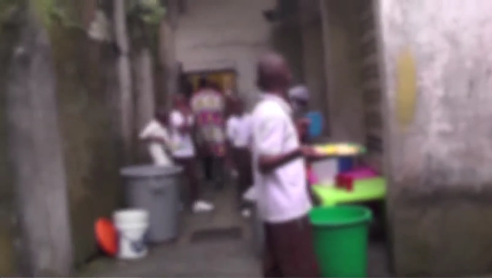
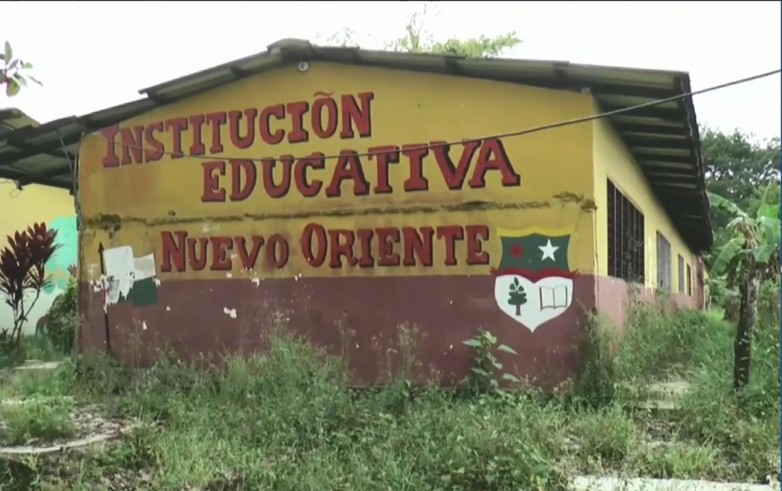
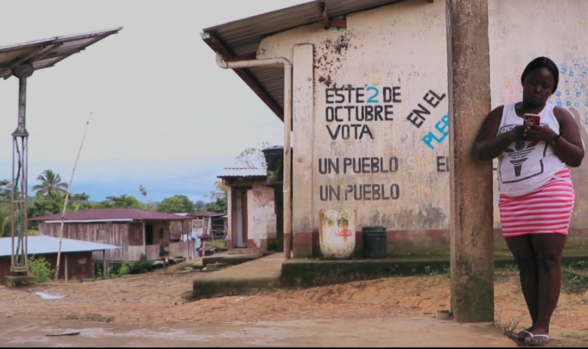
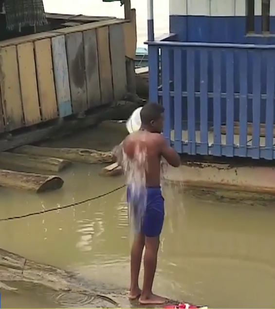
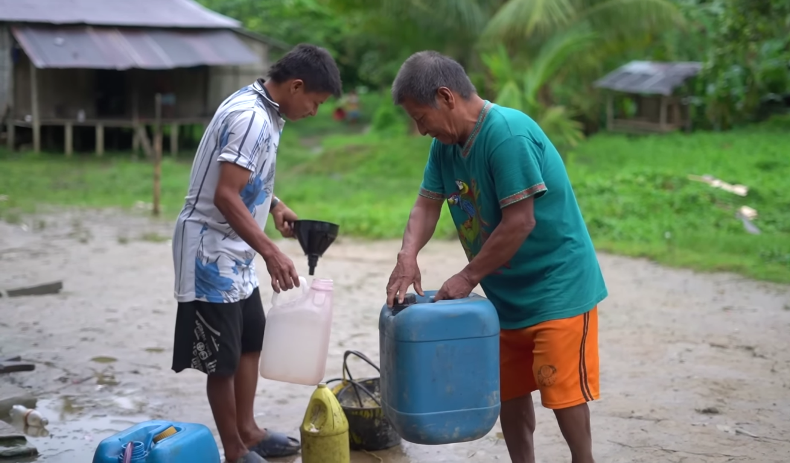

¿A dónde fue la plata?
quién la manejó y cuánto falta
Imagínese que le entrega a alguien $100.000 pesos para que le compre mercado a su familia. Cuando llega a casa no hay nada en la nevera, pero el encargado ya cobró. Eso, en grande y con dinero de todos los colombianos, es lo que encontró la Contraloría en el Chocó entre 2020 y 2023.
El caso más grave lo vivió el ICBF en el Chocó —el instituto que cuida a los niños más vulnerables—: $7.016 millones de pesos que debían pagar programas de alimentación y cuidado para la primera infancia aparecieron cobrados por personas que, al verificarlos con la Registraduría, estaban muertas o no existían. En otras palabras, alguien cobró plata por atender niños que nunca llegaron, o por atender personas que ya habían fallecido. Esto fue publicado oficialmente por la Contraloría el 19 de diciembre de 2022.
El segundo problema más grande está en la educación: $3.868 millones de pesos que el gobierno envió al Chocó y a Quibdó para mejorar los colegios y apoyar a comunidades indígenas Embera Katio y la asociación Orewa, aparecen pagados en contratos sin ningún papel que demuestre que el trabajo se hizo. Es como pagar a un maestro de obras y que la obra nunca aparezca. A eso se suman otros $1.013 millones en acueductos y alcantarillados que fueron pagados pero no funcionan.
¿Qué muestra esta gráfica? De cada 10 pesos mal gastados que encontró la Contraloría en el Chocó, casi 6 venían de programas para niños del ICBF, 3 de colegios y comunidades indígenas, y 1 de acueductos y alcantarillados. Lo más preocupante: la plata que más falta es justo la que debía llegar a los más pobres.

CHOCÓ — Niños reciben su ración de comida en un colegio del departamento en condiciones muy precarias. El Programa de Alimentación Escolar (PAE) acumula hallazgos fiscales por pagos a operadores sin verificación de que la comida llegara realmente a los estudiantes. · Foto: Mario Banguera Hurtado

RIOSUCIO · CHOCÓ — La Institución Educativa Nuevo Oriente, en uno de los corregimientos devueltos al municipio de Riosucio por la Gobernación de Antioquia y los municipios de Turbo y Mutatá. El alcalde de Riosucio y el comité de defensa de Belén de Bajirá denunciaron que los colegios fueron entregados con techos caídos, pupitres carcomidos por el óxido y la humedad. La Procuraduría Delegada para las Etnias ya ordenó una indagación. Esta es la realidad de los $3.868 millones destinados a educación en el Chocó que la Contraloría encontró pagados sin soporte de ejecución. · Foto: Mario Banguera Hurtado

RÍO SAN JUAN · CHOCÓ — Una habitante de la región del río San Juan, una de las zonas más olvidadas del departamento. Según el DANE, el 50% de la población rural del Chocó no accede a educación, una de cada tres personas no sabe leer ni escribir, y solo el 13% del territorio tiene acceso a internet. Las escuelas de la región están en ruinas mientras los contratos de educación aparecen como pagados en los registros oficiales. · Foto: La Cola de Rata · lacoladerata.co — Licencia Creative Commons
| ¿Quién manejaba la plata? | ¿Qué pasó con ella? | ¿Cuánto falta? | ¿En qué años? | ¿Dónde está el documento? |
|---|---|---|---|---|
| ICBF — programas para niños en el Chocó | Pagaron por atender niños y personas que ya estaban muertos o que no existían. La Registraduría lo confirmó. | $7.016.000.000 | 2020–2022 | Contraloría · Comunicado No. 192 · Dic 2022 |
| Plata para colegios en Chocó y Quibdó | Pagaron contratos a comunidades indígenas Embera Katio y Orewa sin ningún papel que pruebe que el trabajo se realizó. | $3.868.000.000 | 2023 | Contraloría · Auditorías Liberadas · 2024 |
| Acueductos y alcantarillados en el Chocó | Pagaron por construir acueductos en Medio Atrato y Carmen de Darién que no funcionan. La gente sigue sin agua limpia. | $1.013.000.000 | 2020–2021 | Contraloría · Actuación Especial · Ene 2023 |
| Carretera en Quibdó (regalías del petróleo) | Plata de las regalías para pavimentar una vía en Quibdó que nunca se terminó. El proyecto venció sin entrega. | Parte de alerta nacional | 2020 | Contraloría · Comunicado No. 113 · Ago 2020 |
| Programa de alimentación escolar — Gobernación | Pagaron a operadores del programa de comidas escolares sin verificar que las raciones llegaran a los niños. | En investigación | 2020–2021 | Contraloría · Balance Gerencia Chocó · 2022 |
"En los municipios pequeños del Chocó, los sistemas de control interno prácticamente no existen. Un alcalde municipal puede manejar contratos millonarios sin un solo contador de planta. Cuando llega la Contraloría, el daño ya está hecho."
Carlos Rentería Palacios — Experto en control fiscalNo es casualidad que la plata que más falta sea precisamente la destinada a los más pobres. Los hospitales de Condoto y el San Francisco de Asís en Quibdó atienden a comunidades que no tienen otra opción. Cuando esa plata desaparece en un contrato mal ejecutado, no hay plan B. El paciente espera en una silla, el niño se queda sin comedor, el río sigue siendo el único "acueducto" disponible.
Se descubre el robo,
pero casi nadie va preso
Descubrir dónde fue la plata es solo el primer paso. El verdadero problema del Chocó —y de Colombia— está en lo que pasa después: la Contraloría publica el informe, lo pone en internet, lo manda a los medios. Pero que alguien pague por eso es otra historia.
Piénselo así: si usted va a la tienda, le pagan con un billete falso y llama a la Policía, la Policía llega, confirma que el billete es falso y abre un expediente. Pero ese expediente puede durar años sin que nadie vaya a la cárcel. Y si pasan demasiados años, la ley obliga a cerrar el caso aunque el culpable sea evidente. Eso es exactamente lo que pasa con los $11.897 millones desaparecidos en el Chocó.
Haz clic en un botón o en la gráfica para ver qué significa cada parte.
¿Qué muestra esta gráfica? De cada 5 casos de plata mal gastada en Colombia, solo 1 termina con alguien condenado. Los otros 4 se archivan, quedan en proceso o simplemente no tienen decisión. Para el Chocó, el patrón es el mismo. La Contraloría detecta. La justicia, pocas veces llega.

CHOCÓ — Un niño se baña con agua sucia del río porque su comunidad no tiene acueducto. El Plan Departamental de Agua recibió $1.013 millones de pesos para construir acueductos. La Contraloría encontró que las obras se pagaron pero no funcionan. · Foto: Mario Banguera Hurtado
¿Por qué casi nadie termina pagando? Hay tres razones principales:
La Contraloría abre el caso, pero darle seguimiento requiere abogados, contadores y tiempo. En departamentos como el Chocó, esos recursos son escasos. Los expedientes quedan guardados, no porque nadie quiera investigar, sino porque no alcanzan las manos.
Existe un plazo legal para investigar. Si ese plazo vence sin condena, el Estado está obligado por ley a cerrar el expediente aunque haya pruebas. Es como si el partido se acabara por tiempo aunque el marcador no esté definido.
Es el factor más difícil de probar. Pero múltiples fuentes consultadas en el Chocó señalan que investigar ciertos casos tiene un costo personal. Documentarlo requiere pruebas concretas que este reportaje sigue buscando.
¿Qué muestra esta gráfica? Cada año aparece un problema diferente, en un sector diferente. Primero los niños del ICBF, luego los colegios. No es un error aislado: es un patrón que se repite. Cada vez que el Estado manda plata al Chocó, hay riesgo de que no llegue a donde debe llegar.
"En el Chocó, cuando uno hace periodismo y pregunta por un proceso de la Contraloría, le dicen que está en revisión. Llevas años de revisión. La demora no es neutral: en la demora está la impunidad."
Luis Palomino — Periodista, Riscales Stereo
CHOCÓ · Comunidad Embera — Dos integrantes de la comunidad cargan agua en galones porque no tienen acueducto. El dinero para construirlo fue cobrado. El acueducto nunca llegó. · Foto: Bernardo Quimuna, líder comunidad pueblo Embera
¿Cómo se descubrió?
una computadora encontró lo que nadie quería ver
Lo más llamativo de todos estos casos es que ninguna de las entidades investigadas se descubrió a sí misma. Nadie en el ICBF levantó la mano y dijo "aquí hay un problema". Nadie en la Gobernación reportó que la plata del comedor escolar no estaba llegando a los niños. Todos los casos los encontró la Contraloría desde afuera.
¿Cómo lo hizo? Con tecnología. La Contraloría tiene un sistema que cruza bases de datos automáticamente —como cuando el banco detecta un gasto raro en su tarjeta y le manda un mensaje—. En el caso del ICBF, el sistema comparó la lista de beneficiarios del programa con el registro de fallecidos de la Registraduría y encontró el fraude. También revisó los contratos firmados con las comunidades indígenas en el portal público de contratación del Estado (SECOP II) y comprobó que los pagos no tenían soporte de ejecución.
¿Qué muestra esta gráfica? Todos los casos fueron descubiertos por la Contraloría, no por las mismas entidades que manejaban la plata. Eso significa que el sistema de vigilancia interno no funciona. Si la Contraloría no hubiera llegado, nadie se habría enterado de nada.
Los que pagan el precio
sin haber hecho nada malo
Cuando desaparece la plata de un programa para niños, no hay un titular que diga "los niños se quedaron sin comida". Hay una estadística de desnutrición que sube. Cuando se cobra un acueducto que no funciona, no hay un cartel que diga "aquí falta agua por corrupción". Hay una familia que sigue cargando el agua del río en un balde. Eso es lo que significan estos $11.897 millones en el Chocó.
El Chocó es, según el DANE, el departamento más pobre de Colombia: más del 70% de su gente tiene necesidades básicas sin cubrir. Los $7.016 millones del ICBF eran para alimentar y cuidar a los niños más pequeños. Los $3.868 millones de educación eran para mejorar los colegios de comunidades indígenas que no tienen otra opción. Los $1.013 millones del agua eran para que familias en Medio Atrato y Carmen de Darién dejaran de tomar agua contaminada. Y la carretera Quibdó–Medellín, con sus contratos sin terminar, sigue siendo la razón por la que todo lo que entra o sale del Chocó cuesta el doble.
¿Qué muestra esta gráfica? El 91% de la plata mal gastada debía llegar a programas sociales: niños, colegios y agua. No a obras de lujo ni a proyectos suntuarios. A lo más básico. Esa es la tragedia del Chocó: la corrupción no ataca las partes del Estado que sobran, ataca las que más se necesitan.
La misma promesa,
cincuenta años después
Vía Quibdó–Medellín · Archivo histórico vs. estado actual 2023
Estado de la vía Quibdó–Medellín en décadas pasadas. Las primeras imágenes registran las mismas promesas de conexión que aún hoy no se han cumplido. · Video: Universidad Tecnológica del Chocó (UTCH)
Estado actual de la vía tras el derrumbe. La Contraloría alertó en 2020 (Com. No. 113) sobre proyectos del SGR vencidos en infraestructura vial de Quibdó: recursos asignados, contratos firmados, obras sin terminar. · Video: ciudadano víctima de la tragedia del derrumbe en la vía Quibdó–Medellín
50 años de promesas · 0 kilómetros completados · Múltiples contratos con hallazgos fiscales.
La impunidad fiscal no es solo un número en un comunicado de la Contraloría. Tiene un rostro: esta carretera.
"Esta vía lleva más de veinte años en obras y nunca termina. Cada gobierno anuncia que va a arreglar la carretera Quibdó–Medellín y cada gobierno entrega lo mismo: un tramo, una promesa y otro contrato. Mientras tanto, los chocoanos seguimos pagando fletes altísimos por todo lo que entra y todo lo que sale."
Ciudadano de Quibdó · Testimonio de campo"La vía Quibdó–Medellín es el símbolo más claro del abandono fiscal en el Chocó. Se han invertido miles de millones de pesos en contratos para esa carretera y hoy sigue igual o peor. Cuando uno revisa los informes de la Contraloría, encuentra hallazgos sobre esas obras. Pero los procesos se archivan, los contratos se renuevan y la vía no mejora. Eso es lo que los ciudadanos no entienden y que nosotros desde el Concejo hemos denunciado: la impunidad fiscal tiene un costo en kilómetros de vía sin pavimentar."
Harrinson Garrido — Concejal de Quibdó · Chocó"Uno ve cómo llega la plata al municipio y después no hay nada: ni la carretera, ni el puesto de salud, ni la escuela. Y cuando uno pregunta, dicen que hay una investigación. Siempre hay una investigación. Nunca hay un resultado."
Adriana Mena — Ciudadana de Tadó"La falta de recuperación de los posibles detrimentos afecta directamente la prestación de servicios básicos en las comunidades más vulnerables del Chocó. Cada peso no recuperado es un peso que no llega a salud, educación o infraestructura."
Experto en control fiscal y desarrollo territorialDe cada 5 pesos mal gastados en el Chocó que detecta la Contraloría, 4 no tienen a nadie condenado. Se sabe que la plata falta. Se sabe quién la manejaba. Pero el sistema casi nunca llega al final.